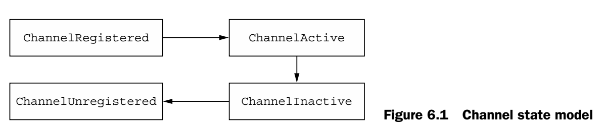
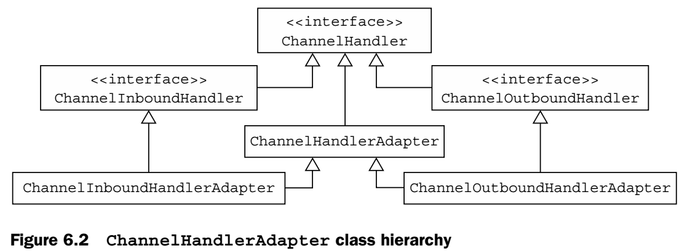
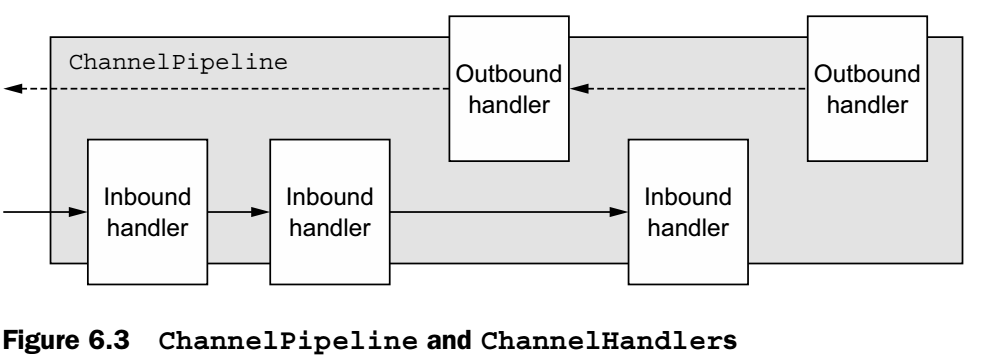
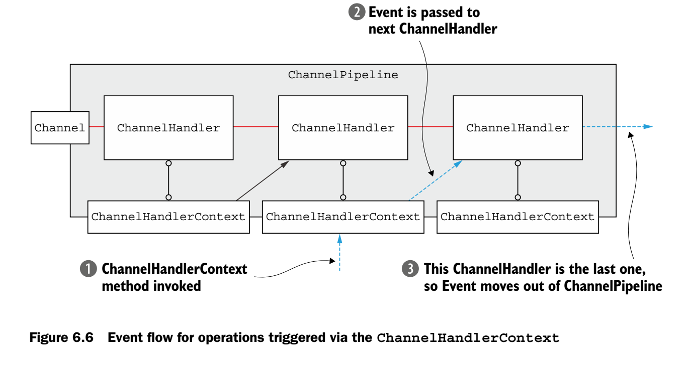
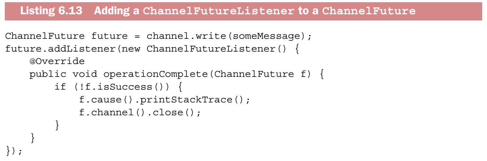
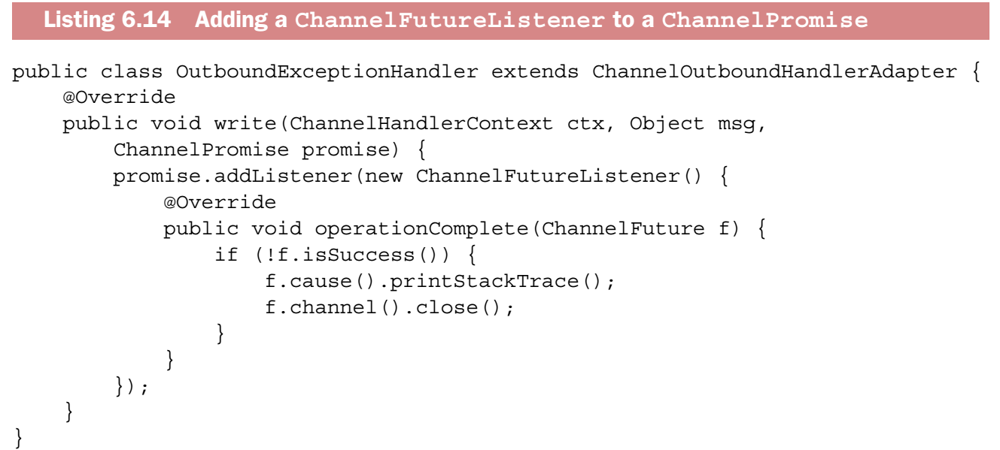

Chapter 6 - ChannelHandler and ChannelPipeline
6.1 ChannelHandler family
Channel State Model

When we override channelRead() in ChannelInboundHandler, we need to release the memory associated with ByteBuf ourselves using ReferenceCountUtil.release().
SimpleChannelInboundHandler will release resources automatically.ChannelInboundHandler is able to defer an operation/event on demand. If writing to a remote peer is suspended, you can defer flush operations and resume them later.
A ChannelHandler could be sharable across multiple ChannelPipelines.

ResourceLeakDetector is provided by Netty to sample about 1% of the buffer allocations to make sure there is no memory leaks
It's important not only to release resources but also to notify the ChannelPromise so the listener could be notified that a message has been handled.
6.2 Interface ChannelPipeline

- It's important not to block the EventLoop thread as it would have a negative impact on the overal handling of I/O.
- If we want to handle legacy code that uses blocking APIs, ChannelPipeline has add() method that accepts an EventExecutorGroup. If an event is passed there, it will be handled by one of the EventExecutors in that group and be removed from the EventLoop of the Channel itself. There is an implementation called DefaultEventExecutorGroup.
6.3 Interface ChannelHandlerContext
- The ChannelHandlerContext associated with a ChannelHandler never changes, so it's ok to cache it. It's created when adding ChannelHandler to pipeline.
- Some other classes have same methods whose names are identical to methods in ChannelHandlerContext. However, the latter will provide better performance.
- If write() is invoked on either Channel or ChannelPipeline level, the event will be propagated all the way through the pipeline, otherwise if it's invoked on the ChannelHandlerContext, the movement will be from one handler to the next.
- To invoke processing starting from a specific handler, you must refer to the ChannelHandlerContext that's associated with the handler before that one.
 - When you share a handler to multiple pipelines, you need to make sure the handler must be thread-safe
6.4 Exception Handling
- The default implementation for exception handling won't do anything except forwarding the exception to the next handler in the pipeline.
- If it reaches the end of the pipeline, it's logged as unhandled.
- Every outbound operation returns a ChannelFuture, which is registered by listeners to be notified of success or error when the operation completes.
- As a subclass of ChannelFuture, ChannelPromise also has writable methods that provide for immediate notification: setSuccess() and setFailure()
There are two ways of adding a listener.
- The most common way is to invoke addListener on the ChannelFuture that is returned by an outbound operation.
 - The second way is to add a ChannelFutureListener to the ChannelPromise that is passed as an argument to the methods.

- If ChannelOutboundHandler itself throws an exception, Netty will notify all the listeners that registered with the ChannelPromise.